- 딥러닝은 큰 숫자 표(행렬) 계산을 엄청 반복해요. 그래서 GPU를 쓰고,
torch.cuda.is_available()로 진짜 쓸 수 있는지 확인해요. - 데이터는 전부 Tensor예요. 값만 보지 말고 shape · dtype · device를 같이 읽어야 해요.
- 학습은
zero_grad → forward → loss → backward → step다섯 단계를 batch마다 반복하는 거예요. 기울기는 쌓이니까 매번 비우고, 평가할 땐model.eval()+torch.no_grad()를 같이 써요.
이론 ↔ 명령어 한눈에
| 이론 | 대응 명령어 |
|---|---|
| 📦 필요한 패키지 | pip install torch (공식 선택기 명령) |
| ① GPU·CUDA 환경 | nvidia-smi, torch.cuda.is_available(), torch.device() |
| ② Tensor | torch.tensor(), torch.randn(), reshape / view / unsqueeze, .to(device) |
| ③ Autograd · 경사하강 | requires_grad=True, loss.backward(), .grad.zero_(), torch.no_grad(), detach() |
| ④ ANN (인공신경망) | nn.Linear, nn.ReLU, nn.Sequential, nn.Module |
| ⑤ 손실함수 · 데이터 공급 | nn.CrossEntropyLoss, TensorDataset, DataLoader |
| ⑥ 학습 루프 | torch.optim.SGD, optimizer.zero_grad(), optimizer.step(), model.train() / model.eval() |
📦 필요한 패키지
| 패키지 (pip 이름) | 뭐 하는 애? | 코드에서 |
|---|---|---|
torch | Tensor 계산, 자동 미분, 신경망 층, Optimizer까지 딥러닝의 모든 것 | import torch, from torch import nn |
| (torch 안에 포함) | 데이터를 batch로 묶어 공급 | from torch.utils.data import TensorDataset, DataLoader |
이날 강의 코드는 torch 하나로 다 돼요. 가상환경(venv)을 만들고 그 안에 설치해요.
🔧 설치 · 확인
python --version
python -m venv .venv
.venv\Scripts\Activate.ps1
python -m pip install --upgrade pip
# torch 설치 명령은 https://pytorch.org/get-started/locally/ 에서 골라 복사
python -c "import torch; print(torch.__version__)"
python -c "import torch; print(torch.version.cuda, torch.cuda.is_available())" # True면 GPU 사용 가능torch는 pytorch.org의 Start Locally 선택기에서 OS · Pip · Python · Compute Platform(CUDA 버전 또는 CPU)을 고른 뒤 나온 명령으로 설치해요. 그냥 pip install torch만 치면 내 GPU의 CUDA와 안 맞는 빌드가 깔릴 수 있어요. 이미 잘 돌아가는 환경이면 버전 숫자만 보고 다시 깔지 마세요.torch.cuda.is_available()로 실제로 되는지 확인해요. GPU가 없거나 False여도 CPU로 같은 코드를 돌릴 수 있어요.이거 어디에 써?
Day8까지의 머신러닝은 사람이 특성을 만들어서 모델에 넣었어요. 딥러닝은 층(layer)을 여러 개 쌓아서 모델이 스스로 쓸 만한 표현을 배우게 해요. 사진·글·소리처럼 사람이 특성을 일일이 정하기 어려운 데이터에 강해요.
| CPU | GPU | |
|---|---|---|
| 생김새 | 소수의 강한 코어 | 아주 많은 연산 유닛 |
| 잘하는 일 | 복잡한 분기, 파일 읽기, 전처리, 프로그램 흐름 | 행렬곱·합성곱처럼 같은 모양의 계산을 대량으로 |
| 비유 | 복잡한 일을 빨리 하는 소수 정예 | 단순 계산을 동시에 하는 대규모 팀 |
딥러닝의 핵심 계산은 행렬 곱셈이에요. 결과의 칸마다 곱하고 더하는데, 각 칸은 서로 독립이라 동시에 계산할 수 있어요.
[1 2] [5 6] [19 22]
[3 4] × [7 8] = [43 50] 예: 19 = 1×5 + 2×7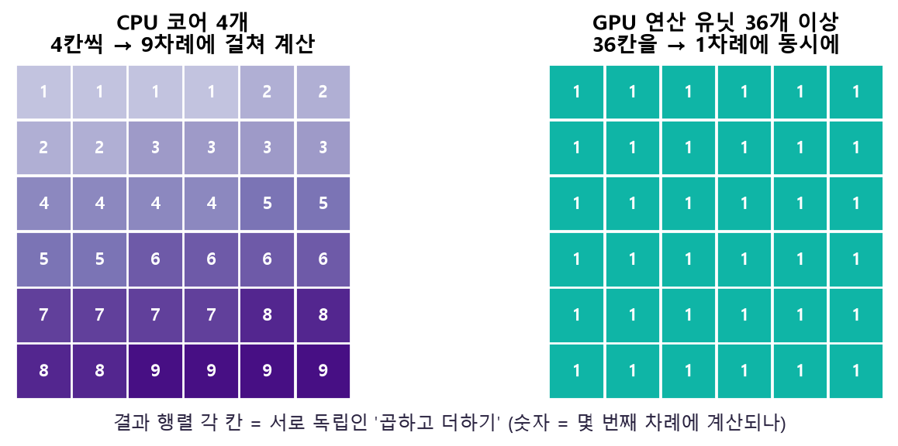
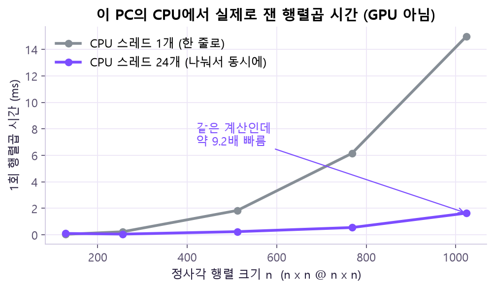
CPU가 파일 읽기·전처리→ 순전파
GPU가 행렬 계산→ 오차·역전파
GPU가 기울기 계산→ 가중치 갱신
GPU에서 값 수정
이 과정을 수백·수천 batch에 반복하니까 GPU 병렬 연산의 이점이 누적돼요. 파일 읽기·전처리 같은 순차 작업은 여전히 CPU 몫이에요.
① GPU·CUDA 환경 — "GPU가 있다" ≠ "PyTorch가 GPU를 쓴다"
GPU 학습은 네 층이 모두 맞아야 돼요. 하나만 어긋나도 GPU를 못 써요.
연산 장치 · VRAM→ GPU Driver
OS와 GPU 연결→ CUDA Runtime
GPU 연산 API→ PyTorch
Tensor · Autograd · 신경망
🔧 명령어: nvidia-smi (터미널)
nvidia-smi| 출력 항목 | 뜻 |
|---|---|
| GPU Name | 실제 장치 모델 (예: RTX …) |
| Driver / KMD Version | 설치된 그래픽 드라이버 버전 |
| CUDA (UMD) Version | 드라이버가 지원하는 상한일 수 있음. 설치된 CUDA Toolkit과 항상 같진 않아요 (출력 형식은 버전마다 조금 달라요) |
| Memory-Usage | 사용 중인 VRAM / 전체 VRAM (예: 0 / 8192 MiB) |
| GPU-Util | 지금 GPU가 얼마나 바쁜지 (%) |
| Processes | GPU를 쓰고 있는 프로그램 목록 |
nvidia-smi가 잘 나와도 PyTorch CUDA가 True라는 보장은 없어요. PyTorch 빌드(CPU용인지 CUDA용인지), 가상환경, 드라이버를 모두 확인해야 해요.🔧 명령어: PyTorch에서 GPU 확인
import torch
print("PyTorch:", torch.__version__)
print("빌드 CUDA:", torch.version.cuda) # CPU 빌드면 None
print("CUDA 사용 가능:", torch.cuda.is_available())
if torch.cuda.is_available(): # 꼭 확인한 뒤에 조회!
print("GPU:", torch.cuda.get_device_name(0))
props = torch.cuda.get_device_properties(0)
print("VRAM(GB):", round(props.total_memory / 1024**3, 1))| 함수 / 인자 | 뜻 | 바꾸면? / 주의 |
|---|---|---|
torch.cuda.is_available() | CUDA 런타임과 보이는 장치를 지금 PyTorch가 쓸 수 있나? → True/False | 인자 없음. 필수 인자도 없어요 |
torch.cuda.get_device_name(device=None) | GPU 이름 문자열(str) | GPU가 없는데 부르면 오류 → 그래서 available 확인 뒤 호출 |
torch.cuda.get_device_properties(device=None) | 메모리(total_memory) 등 속성 객체 | 바이트 단위라 / 1024**3 하면 GB |
device 인자 | int · str · torch.device 가능 | None이면 현재 장치. 보통 0(첫 번째 GPU), 장치 번호가 다를 수도 있어요 |
torch.version.cuda도 따로 봐요? — 이건 "이 PyTorch가 어떤 CUDA로 빌드됐나"예요. CPU 빌드면 None이라, GPU가 있는데 False가 나오는 이유를 바로 알 수 있어요. 반면 is_available()은 "지금 이 환경에서 실제로 쓸 수 있나"라서 둘은 다른 질문이에요.🔧 명령어: CPU·GPU 둘 다 되는 코드 패턴
device = torch.device("cuda" if torch.cuda.is_available() else "cpu")
model = model.to(device)
X = X.to(device)"cuda"를 코드에 박아 두면 GPU 없는 PC에서 바로 오류가 나요. is_available() 결과로 장치를 고르면 같은 코드가 GPU 있는 곳에선 GPU로, 없는 곳에선 CPU로 돌아가요. False가 나와도 학습은 할 수 있어요..to(device)는 화살표처럼 한쪽 창고에서 다른 쪽으로 복사해요. 🤔 왜? GPU는 자기 창고(VRAM)에 있는 숫자만 바로 계산할 수 있어요. 그래서 model·xb·yb를 모두 같은 쪽에 둬야 하고, 복사에는 시간이 드니 batch 단위로 한 번에 옮겨요.② Tensor — 딥러닝의 공통 데이터 상자
Tensor는 차원을 가진 숫자 배열이에요. NumPy 배열이랑 비슷한데, GPU에 올릴 수 있고 미분도 자동으로 해 줘요.
| 차원 | 예 | shape |
|---|---|---|
| 0D 스칼라 | 3.14 | () |
| 1D 벡터 | [1, 2, 3] | (3,) |
| 2D 행렬 | [[1,2],[3,4]] | (2, 2) |
| 3D 이상 | batch · 이미지 · 문장 | shape로 의미를 읽어요 |
딥러닝에서 자주 보는 shape
| 대상 | shape | 뜻 |
|---|---|---|
| 표 데이터 | (batch, feature) | 여러 행의 특성 |
| 분류 정답 | (batch,) | 샘플마다 클래스 번호 하나 |
| 분류 logits | (batch, class) | 클래스별 원시 점수 |
| 흑백 이미지 | (batch, channel, height, width) | CNN 입력 |
| 문장 임베딩 | (batch, sequence, feature) | RNN·Transformer 입력 |
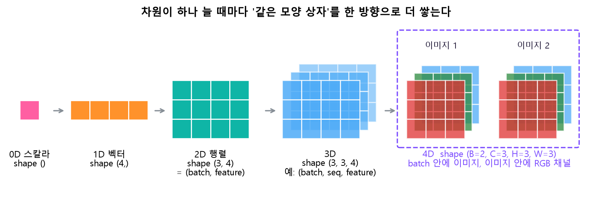
(B, C, H, W): 이미지 2장, 각 장은 빨강·초록·파랑 채널 3장, 채널 하나는 3×3 픽셀. 🤔 왜? shape의 숫자 하나하나가 "이 방향으로 몇 개 쌓였나"예요. 그래서 shape만 읽어도 "이미지 몇 장 · 채널 몇 개 · 크기 얼마"를 알 수 있고, 층이 기대하는 방향과 어긋나면 오류가 나요.requires_grad.🔧 명령어: Tensor 만들기 torch.tensor()
import torch
x = torch.tensor([[1.0, 2.0], [3.0, 4.0]], dtype=torch.float32)
y = torch.tensor([0, 1], dtype=torch.long)
print(x.shape, x.dtype, x.device) # torch.Size([2, 2]) torch.float32 cpu
print(y.shape, y.dtype) # torch.Size([2]) torch.int64torch.tensor(data, *, dtype=None, device=None, requires_grad=False, pin_memory=False)
| 인자 | 뜻 | 바꾸면? |
|---|---|---|
data (필수) | list, tuple, NumPy 배열, 스칼라 | 값을 복사해 새 Tensor를 만듦 → 원본을 바꿔도 Tensor는 안 바뀜 |
dtype | torch.float32, torch.long … | 입력 특성은 보통 float, 분류 클래스 번호는 long. 틀리면 손실함수에서 오류 |
device | "cpu" / "cuda" | 처음부터 GPU에 만들 수 있음 (나중에 옮기는 복사가 줄어요) |
requires_grad | 연산을 미분용으로 기록할지 (기본 False) | True면 Autograd가 추적 (③). 기록하는 만큼 메모리를 더 씀 |
pin_memory | CPU 고정 메모리에 만들지 | GPU로 보내는 복사가 빨라질 수 있음 |
CrossEntropyLoss가 class index target을 long으로 받기 때문에 맞춰 줘요.torch.tensor(t)로 다시 감싸면 복사 + 그래프 분리(detach)가 일어나요. 의도에 따라 clone() / detach() / torch.as_tensor()를 구분해서 써요.🔧 명령어: 난수 · 0 · 1로 채우기
a = torch.randn(2, 3) # 평균 0, 분산 1 정규분포 난수
b = torch.zeros(2, 3) # 0으로 채움
c = torch.ones(2, 3, dtype=torch.float32) # 1로 채움
torch.manual_seed(42) # 난수 재현용 seed 고정
print(a.shape, b.sum().item(), c.mean().item()) # torch.Size([2, 3]) 0.0 1.0torch.randn(*size, *, generator=None, dtype=None, device=None, requires_grad=False)
| 함수 / 인자 | 뜻 | 바꾸면? |
|---|---|---|
size (필수) | 만들 shape. 2, 3 또는 (2, 3) | shape만 바뀌고 값은 여전히 표준정규 난수 |
generator | 재현용 난수 생성기 | 같은 generator·seed면 같은 난수가 나옴 |
dtype · device · requires_grad | torch.tensor와 같은 뜻 | |
torch.zeros / torch.ones | 0 / 1로 채운 Tensor | 모델 입력·초기 상태·테스트 데이터 만들 때 |
.item() | 원소 1개짜리 Tensor → 파이썬 숫자 | 출력·기록할 때 씀 |
Broadcasting과 shape 바꾸기
X가 (2, 3)이고 bias가 (3,)이면, X + bias는 bias를 행마다 자동으로 늘려서 더해 줘요(결과 (2, 3)). 이걸 broadcasting이라고 해요. 편하지만, 의도와 다른 shape끼리도 계산돼 버릴 수 있으니 shape부터 확인해요.
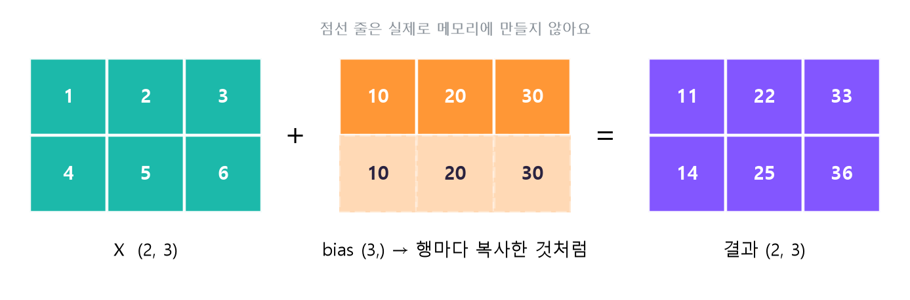
[10, 20, 30]은 한 줄뿐인데, 아래 점선 줄처럼 행마다 복사된 것처럼 더해져 결과가 (2, 3)이 돼요. 🤔 왜? 마지막 차원(3)이 서로 같으니 PyTorch가 "모자란 행 방향으로 늘려도 된다"고 판단해요. 실제 복사는 하지 않아 메모리는 아껴요. 반대로 의도치 않은 shape끼리도 이렇게 늘어나 버릴 수 있으니 shape 확인이 중요해요.| 연산 | 하는 일 | 언제 / 주의 |
|---|---|---|
x.reshape(…) | 원소 개수는 그대로, 모양만 바꿔 봄 | 원소 수가 안 맞으면 오류 |
x.view(…) | 메모리 배치가 허락하면 같은 데이터를 다른 모양으로 봄 | 메모리 배치가 안 맞으면 오류 → 그땐 reshape |
x.transpose(0, 1) | 두 차원의 순서를 바꿈 | 행↔열 바꾸기 |
x.unsqueeze(0) / x.squeeze() | 크기 1인 차원을 추가 / 제거 | 샘플 1개를 (1, feature) batch로 만들 때 |
unsqueeze(0)로 batch 차원을 붙여 줘야 해요. broadcasting은 작은 Tensor를 규칙에 따라 자동 확장하는 거라, 모양이 의도와 달라도 오류 없이 계산될 수 있어요. 그래서 shape부터 확인하는 습관이 중요해요.🔧 명령어: 장치 옮기기 .to(device)
from torch import nn
device = torch.device("cuda" if torch.cuda.is_available() else "cpu")
X = torch.randn(4, 2).to(device)
model = nn.Linear(2, 1).to(device)
output = model(X)
print(X.device, output.device) # 둘이 같아야 함tensor.to(device=None, dtype=None, non_blocking=False, copy=False) — 명시적 필수 인자는 없지만, 보통 device나 dtype 중 하나를 적어요.
| 인자 | 뜻 | 바꾸면? |
|---|---|---|
device | cpu / cuda | 그 장치로 복사한 Tensor를 반환 (원본은 그대로) |
dtype | 자료형 변경 (예: torch.float32) | 장치는 두고 자료형만 바꿀 수 있음 |
non_blocking | 가능하면 비동기 복사 요청 | True면 복사하는 동안 다른 일을 할 수 있음 (pin_memory와 함께) |
copy | 조건이 같아도 복사할지 | False(기본)면 이미 같은 장치·dtype일 때 원본을 그대로 돌려줄 수 있음 |
X.to(device)만 쓰고 끝내면 안 돼요. 새 Tensor를 돌려주는 거라서 X = X.to(device)처럼 다시 담아야 해요. 그리고 모델 · 입력 · 정답이 모두 같은 device에 있어야 계산돼요. CPU Tensor와 CUDA 모델을 섞으면 오류가 나요..to()는 한쪽에서 다른 쪽으로 복사하는 거라 시간도 들어요. 그래서 소량을 자주 옮기기보다 batch 단위로 한 번에 옮겨요.③ Autograd와 경사하강 — 미분은 PyTorch가 대신
PyTorch는 계산을 하면서 "무엇과 무엇을 곱하고 더했는지"를 계산 그래프로 기록해요. 마지막에 backward()를 부르면 그 기록을 거꾸로 따라가며(연쇄법칙, chain rule) 기울기를 자동으로 구해요.
y = x² + 2x + 1 → dy/dx = 2x + 2
x = 3 이면 y = 16, dy/dx = 8y = x² + 2x + 1을 x = 3에서 계산한 계산 그래프. 보라 실선 = 순전파(값 9, 6, 16이 흘러감), 분홍 점선 = y.backward()(기울기가 거꾸로 흘러감). 🤔 왜? 연산 하나하나의 미분은 쉬워요(x²은 2x, 2·x는 2, +는 1). 거꾸로 가며 이걸 곱하고(연쇄법칙), 길이 갈라졌다 합쳐지면 더하면 끝이에요. 그래서 x.grad = 6 + 2 = 8로, 코드 출력 16.0 8.0과 같아요.| 개념 | 한마디로 |
|---|---|
requires_grad=True | 이 Tensor의 연산을 Autograd가 추적해요. 학습 파라미터는 보통 True |
.grad | backward() 후 기울기가 저장되는 곳. 누적돼요 |
torch.no_grad() | 이 블록 안 연산은 그래프에 기록하지 않음 (평가·예측·수동 갱신) |
tensor.detach() | 현재 그래프에서 떼어 낸 Tensor |
🔧 명령어: 자동 미분 backward()
x = torch.tensor(3.0, requires_grad=True)
y = x**2 + 2*x + 1
y.backward()
print(y.item(), x.grad.item()) # 16.0 8.0함수 형태: torch.autograd.backward(tensors, grad_tensors=None, retain_graph=None, create_graph=False, inputs=None) — 보통은 loss.backward() 메서드로 불러요.
| 인자 | 뜻 | 바꾸면? |
|---|---|---|
| (없음) | 스칼라 loss면 loss.backward()만 부르면 됨. 반환값은 None, 결과는 leaf Tensor·Parameter의 .grad에 | 값이 아니라 .grad가 바뀌어요 |
gradient / grad_tensors | 출력이 스칼라가 아닐 때 시작 기울기 | 비스칼라 출력에서 안 주면 오류 |
retain_graph | 그래프를 지우지 않고 남겨 둘지 | True면 같은 그래프로 한 번 더 backward 가능 (메모리↑) |
create_graph | 고차 미분용 그래프를 만들지 | 기울기의 기울기가 필요할 때만 |
inputs | 특정 입력에 대해서만 기울기 계산 | 나머지 .grad는 건드리지 않음 |
backward()를 또 부르면 이전 기울기에 더해져요(2 → 4). 그래서 일반 학습 루프에선 매 step마다 기울기를 비워요(zero_grad).직접 눌러 보세요. loss = 2·w라서 backward 한 번마다 기울기 2가 생겨요.
경사하강법 (Gradient Descent)
손실을 줄이려면 기울기의 반대 방향으로 조금씩 움직이면 돼요. 얼마나 크게 움직일지가 학습률(learning rate, lr)이에요.
parameter = parameter − learning_rate × gradient목표값 4에 w를 맞추는 문제 loss = (w − 4)²로 직접 해 봐요. 학습률을 바꾸면 이동 모습이 달라져요.
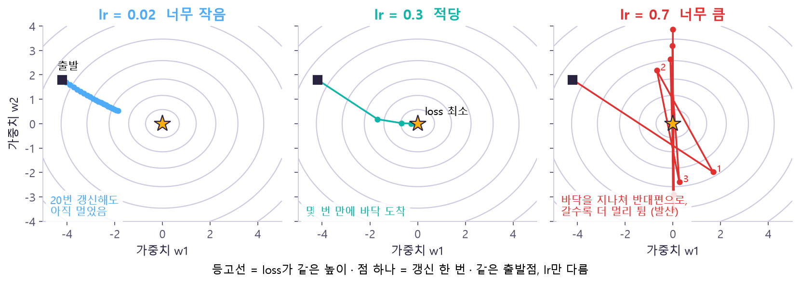
2(w − 4)라서 한 번 갱신하면 "4까지 남은 거리"가 × (1 − 2·lr)배가 돼요. lr = 0.1이면 ×0.8 → 매번 20%씩 줄어요. lr = 0.8이면 ×(−0.6) → 부호가 바뀌어(4를 넘어감) 왔다 갔다 하지만 크기는 줄어요. lr = 1이면 ×(−1) → 같은 거리로 영원히 왕복. lr > 1이면 |배수| > 1이라 넘어갈 때마다 더 멀어져요. 반대로 lr이 아주 작으면 배수가 1에 가까워 거의 안 움직여요.🔧 명령어: 손으로 5번 갱신하기
w = torch.tensor(0.0, requires_grad=True)
target = torch.tensor(4.0)
lr = 0.1
for step in range(5):
loss = (w - target) ** 2
loss.backward() # 1. 기울기 계산
with torch.no_grad():
w -= lr * w.grad # 2. 기록 없이 값 갱신
w.grad.zero_() # 3. 기울기 비우기
print(step + 1, round(w.item(), 4))| 줄 | 왜? |
|---|---|
with torch.no_grad(): | 갱신하는 연산 자체가 다음 계산 그래프에 기록되지 않도록 |
w.grad.zero_() | 안 비우면 다음 step 기울기에 이번 것이 더해짐 |
lr | 작게 → 느림, 크게 → 진동·발산 가능 |
🔧 명령어: torch.no_grad() vs tensor.detach()
model.eval()
with torch.no_grad(): # 블록 안 연산은 그래프에 기록 안 함
logits = model(X)
probs = torch.softmax(logits, dim=1).detach().cpu() # 그래프에서 떼고 CPU로| 명령 | 하는 일 | 언제? |
|---|---|---|
with torch.no_grad(): | 블록 안 연산을 gradient 그래프에 기록하지 않음 | 평가 · 예측 · 수동 파라미터 갱신 |
tensor.detach() | 현재 그래프에서 분리한 Tensor(view)를 반환 | 값만 꺼내 쓰고 싶을 때 (기록·출력·NumPy 변환) |
w -= lr * w.grad도 연산이라, 기록을 켜 두면 "갱신하는 과정" 자체가 다음 계산 그래프에 섞여 들어가요. 파라미터 값 자체를 Autograd가 다시 추적하지 않도록 갱신 구간을 분리하는 거예요. 반대로 학습 중 필요한 기울기까지 실수로 끊지 않도록 no_grad/detach는 위치를 잘 골라야 해요.④ ANN — 가중합 + 비선형을 층으로 쌓기
인공 뉴런 하나는 입력마다 가중치를 곱해 더하고 편향(bias)을 더한 다음(z = w₁x₁ + w₂x₂ + b), 활성화 함수(ReLU)를 통과시켜요. 이런 뉴런을 여러 개 묶은 게 층, 층을 쌓은 게 ANN이에요.
특성 2개 · (batch, 2)→ Linear(2, 8) + ReLU
은닉 표현 8개→ Linear(8, 2)
클래스 logits 2개→ argmax
예측 0 또는 1
numel() 합이 42가 나와요.| 단계 | 코드 | 입력 shape | 출력 shape |
|---|---|---|---|
| Linear 1 | nn.Linear(2, 8) | (batch, 2) | (batch, 8) |
| ReLU | nn.ReLU() | (batch, 8) | (batch, 8) |
| Linear 2 | nn.Linear(8, 2) | (batch, 8) | (batch, 2) |
| 예측 | argmax(dim=1) | (batch, 2) | (batch,) |
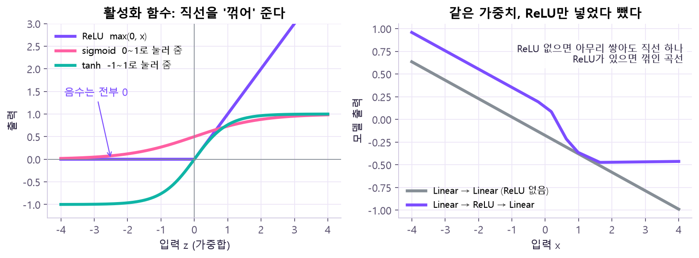
argmax(dim=1)는 클래스 차원을 없애고 "가장 큰 점수의 번호"만 남겨서 (batch,)가 돼요.🔧 명령어: 2→8→2 ANN 만들기
import torch
from torch import nn
model = nn.Sequential(
nn.Linear(2, 8),
nn.ReLU(),
nn.Linear(8, 2),
)
X = torch.randn(4, 2)
logits = model(X) # 순전파: 각 층의 forward를 순서대로 호출
print(logits.shape) # torch.Size([4, 2]) ← 확률이 아니라 logits
print(sum(p.numel() for p in model.parameters())) # 42nn.Linear(in_features, out_features, bias=True, device=None, dtype=None) · nn.ReLU(inplace=False) · nn.Sequential(*modules)
| 명령 / 인자 | 뜻 | 바꾸면? / 주의 |
|---|---|---|
in_features (필수) | 입력 마지막 차원 크기 | 입력의 마지막 차원과 다르면 shape 오류 |
out_features (필수) | 출력 feature 수 (이 층의 뉴런 수) | 키우면 표현력·파라미터 수↑. weight shape는 (out, in) → Linear(2,8)은 (8, 2) |
bias=True | 편향 b 사용 여부 (기본 True) | False면 bias 파라미터가 없어짐. bias shape는 (out_features,) |
device · dtype | 파라미터를 만들 장치·자료형 | 보통 생략하고 나중에 model.to(device) |
nn.ReLU(inplace=False) | 음수를 0으로 (필수 인자 없음) | inplace=True면 입력을 직접 덮어써 메모리를 아끼지만 원본이 사라짐. 출력 shape는 입력과 같음 |
nn.Sequential(*modules) | 층을 순서대로 연결해 모델 하나로 | 넣은 순서가 곧 모델 구조. 마지막 모듈 출력을 돌려줌. OrderedDict로 이름도 붙일 수 있음 |
model.parameters() | 학습할 Parameter 반복자 (Optimizer에 넘김) | named_parameters()는 이름까지 |
p.numel() | 파라미터 안 숫자 개수 | 2×8+8 + 8×2+2 = 42 |
CrossEntropyLoss가 안에서 softmax까지 함께 계산하기 때문에, 모델에서 또 softmax를 하면 두 번 하게 돼요.🔧 명령어: 직접 모델 클래스 만들기 nn.Module
class SimpleANN(nn.Module):
def __init__(self):
super().__init__() # 꼭 호출해야 층이 등록됨
self.net = nn.Sequential(nn.Linear(2, 8), nn.ReLU(), nn.Linear(8, 2))
def forward(self, x): # 입력 (batch, 2) → 출력 (batch, 2)
return self.net(x)
model = SimpleANN()
logits = model(X) # model(X) 하면 forward가 실행됨| 구성 | 뜻 | 빠뜨리면? |
|---|---|---|
nn.Module 상속 | 모든 신경망의 기본 클래스. 하위 Module·Parameter 등록, device 이동, train/eval 모드 관리 | parameters()·to()·eval()을 못 씀 |
super().__init__() | 부모 초기화 | 층을 등록할 장부가 안 만들어져 오류 |
forward(x) | 순전파 계산을 정의 | model(X) 호출 시 실행할 내용이 없음 |
model.to(device) | 안의 층·파라미터가 한꺼번에 이동 | 하나씩 옮길 필요 없음 |
self.net = …처럼 속성에 층을 넣으면 Module이 그걸 자동으로 "내 하위 층"으로 등록해요. 덕분에 model.parameters() 한 줄로 모든 가중치를 Optimizer에 넘기고, model.to(device) 한 줄로 전부 옮기고, model.eval() 한 줄로 전부 평가 모드로 바꿀 수 있어요.nn.ModuleList 같은 등록 구조를 써요.⑤ 손실함수와 데이터 공급
logits · 확률 · 클래스는 다른 값
| 이름 | 예 | 특징 |
|---|---|---|
| logits | [1.8, -0.4] | 모델이 낸 원시 점수. 합이 1일 필요 없음 |
| softmax 확률 | [0.90, 0.10] | 클래스별 가능성. 합이 1 |
| 예측 클래스 | argmax → 0 | 점수가 가장 큰 클래스 번호 |
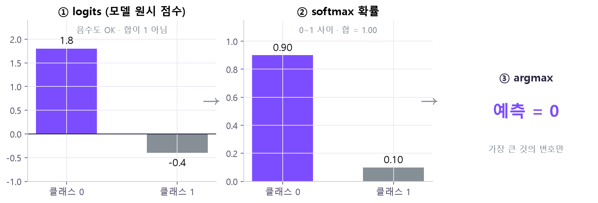
[1.8, -0.4]는 음수도 있고 합도 1이 아니에요 → ② softmax를 거치면 [0.90, 0.10], 모두 0~1이고 합이 1 → ③ argmax는 큰 쪽 번호 0만 남겨요. 🤔 왜? softmax는 점수마다 e점수를 하고 전체 합으로 나눠요. 그래서 순서(누가 더 큰가)는 그대로 두고 "비율"로 바꿔요. 점수 차 2.2가 확률 차 0.90 vs 0.10으로 벌어지는 것도 지수 때문이에요.손실(loss)은 "정답에서 얼마나 멀리 있나"를 숫자 하나로 만든 거예요. 학습은 이 숫자를 줄이는 방향으로 가중치를 고쳐요. 정확도(accuracy)는 사람이 보는 성적표이고, loss와는 다른 지표예요.
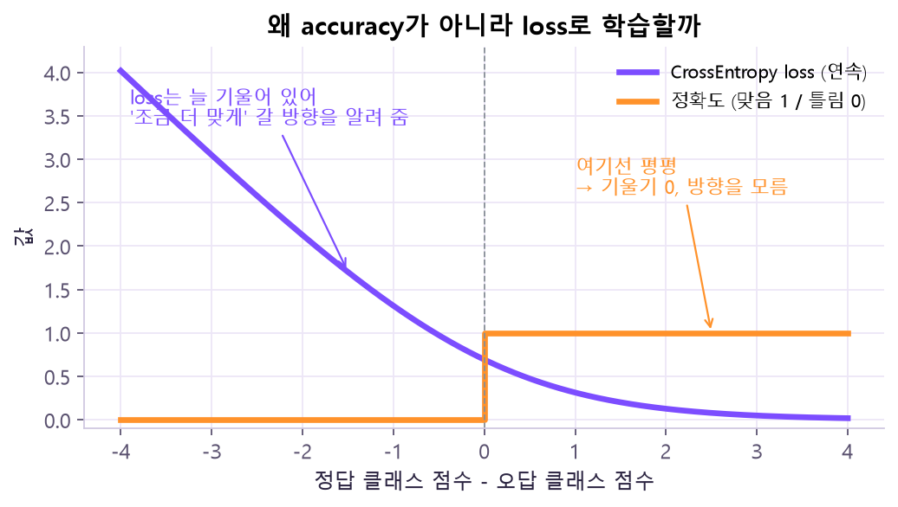
🔧 명령어: 분류 손실 nn.CrossEntropyLoss
loss_fn = nn.CrossEntropyLoss()
logits = model(X) # (batch, class), softmax 전!
y = torch.tensor([0, 1, 1, 0], dtype=torch.long) # (batch,), long
loss = loss_fn(logits, y) # 스칼라, 작을수록 정답에 가까움nn.CrossEntropyLoss(weight=None, ignore_index=-100, reduction="mean", label_smoothing=0.0) — 생성자 필수 인자는 없고, 호출할 때 (logits, target)을 넣어요.
| 인자 | 뜻 | 바꾸면? |
|---|---|---|
weight | 클래스별 가중치 | 적은 클래스를 틀릴 때 loss가 더 커져 → 그 클래스를 더 신경 써서 학습 |
ignore_index | 무시할 클래스 번호 (기본 -100) | 그 번호가 정답인 샘플은 loss·기울기에서 빠짐 |
reduction | "mean"(기본) / "sum" / "none" | mean이면 스칼라(batch 평균), sum이면 합이라 batch가 클수록 커짐, none이면 샘플별 loss |
label_smoothing | 정답을 살짝 부드럽게 (기본 0.0) | 키우면 정답에 100% 확신하도록 몰아붙이지 않음 |
CrossEntropyLoss에는 softmax 하기 전 logits를 그대로 넣어요(안에서 softmax를 함께 계산해요). 정답은 클래스 번호, shape (batch,), dtype long. 그래서 모델 마지막에 softmax를 안 붙여요.Dataset과 DataLoader
X와 y를 같은 번호로 묶음→ DataLoader
batch_size만큼 꺼냄, 섞기→ mini-batch
xb (32, 2) · yb (32,)→ 모델 학습
반복
200개를 32개씩 나누면 32 × 6 = 192, 마지막 batch는 8개예요. 마지막 batch는 작을 수 있어요. batch마다 forward · backward · step을 한 번씩 해요.
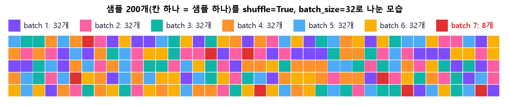
shuffle=True라 매 epoch 순서를 섞은 뒤 앞에서부터 32개씩 잘라요. 그래서 각 batch는 데이터 전체를 골고루 닮은 작은 표본이 되고, 200 = 32×6 + 8이라 마지막만 작아요.🔧 명령어: TensorDataset · DataLoader
from torch.utils.data import TensorDataset, DataLoader
X = torch.randn(200, 2)
y = ((X[:, 0] + 0.8 * X[:, 1]) > 0).long()
loader = DataLoader(TensorDataset(X, y), batch_size=32, shuffle=True)
xb, yb = next(iter(loader))
print(xb.shape, yb.shape) # torch.Size([32, 2]) torch.Size([32])DataLoader(dataset, batch_size=1, shuffle=False, num_workers=0, pin_memory=False, drop_last=False, ...)
| 인자 | 뜻 | 바꾸면? |
|---|---|---|
dataset (필수) | 꺼낼 데이터 묶음 (TensorDataset(X, y)는 X와 y를 같은 번호로 묶고, len = 샘플 수) | |
batch_size | 한 번에 꺼낼 샘플 수 (기본 1) | 키우면 step 수↓·메모리↑·기울기 안정, 줄이면 그 반대 (Day10) |
shuffle | epoch마다 순서 섞기 (기본 False) | train은 True — 매번 같은 순서로 보면 그 순서 패턴까지 배울 수 있어서 섞어 줘요 |
num_workers | 데이터 읽는 보조 프로세스 수 (기본 0) | 늘리면 로딩이 빨라질 수 있지만, Windows에선 실행 진입점(if __name__ == "__main__":) 구조에 주의 → 처음엔 0 |
pin_memory | GPU 전송용 고정 메모리 | True면 CPU→GPU 복사가 빨라질 수 있음 |
drop_last | 마지막 작은 batch 버리기 (기본 False) | True면 모든 batch 크기가 같아지지만 그 epoch엔 일부 샘플을 안 씀 |
⑥ 학습 루프 — 다섯 단계를 batch마다
지난 기울기 비우기→ 2. forward
예측→ 3. loss
오차 계산→ 4. backward
기울기 계산→ 5. step
가중치 갱신
loss.backward() 직후엔 기울기만 계산됐을 뿐이고, 값이 실제로 바뀌는 건 optimizer.step()에서예요.🔧 명령어: 준비 + batch 반복
import torch
from torch import nn
from torch.utils.data import TensorDataset, DataLoader
torch.manual_seed(42)
device = torch.device("cuda" if torch.cuda.is_available() else "cpu")
X = torch.randn(200, 2)
y = ((X[:, 0] + 0.8 * X[:, 1]) > 0).long()
loader = DataLoader(TensorDataset(X, y), batch_size=32, shuffle=True)
model = nn.Sequential(nn.Linear(2, 8), nn.ReLU(), nn.Linear(8, 2)).to(device)
loss_fn = nn.CrossEntropyLoss()
optimizer = torch.optim.SGD(model.parameters(), lr=0.1)
for epoch in range(80):
model.train()
for xb, yb in loader:
xb, yb = xb.to(device), yb.to(device) # batch도 같은 device로
optimizer.zero_grad()
logits = model(xb)
loss = loss_fn(logits, yb)
loss.backward()
optimizer.step()
model.eval()
with torch.no_grad(): # 평가: 기록 끄기
pred = model(X.to(device)).argmax(dim=1)
acc = (pred.cpu() == y).float().mean().item()torch.optim.SGD(params, lr=0.001, momentum=0, weight_decay=0, ...) · optimizer.zero_grad(set_to_none=True) · optimizer.step(closure=None)
| 명령 / 인자 | 뜻 | 바꾸면? |
|---|---|---|
params (필수) | 갱신할 Parameter, 보통 model.parameters() | 여기 안 넘긴 파라미터는 학습해도 안 바뀜 |
lr | 학습률 (기본 0.001, 그래도 명시 권장) | 너무 크면 발산, 너무 작으면 느림 (③ 실험 참고). 강의 예시는 0.1 |
momentum, weight_decay, nesterov | 이전 방향 누적, 큰 가중치 억제 (기본 0) | 다음 수업에서 본격 비교 |
optimizer.zero_grad(set_to_none=True) | 지난 기울기 비우기 | 기본은 .grad를 None으로, False면 0으로 채움 |
optimizer.step(closure=None) | 현재 .grad로 한 번 갱신 (반환 None) | closure는 대부분 생략 |
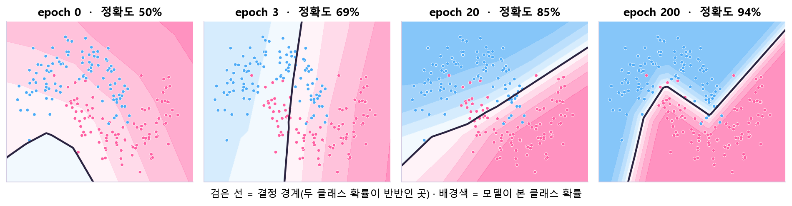
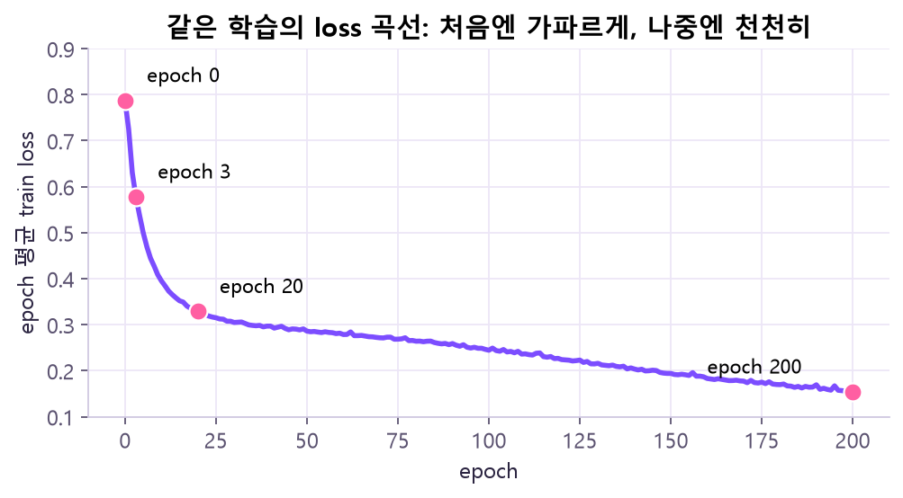
🔧 명령어: epoch 평균 loss를 제대로 내기
def train_one_epoch(model, loader, loss_fn, optimizer, device):
model.train()
total_loss = 0.0
for xb, yb in loader:
xb, yb = xb.to(device), yb.to(device)
optimizer.zero_grad()
loss = loss_fn(model(xb), yb)
loss.backward()
optimizer.step()
total_loss += loss.item() * len(xb) # batch 평균 × batch 크기
return total_loss / len(loader.dataset) # 샘플 수로 가중한 평균 loss× len(xb)를 해? — loss는 batch 안의 평균이에요(reduction="mean"). 마지막 batch는 8개처럼 작을 수 있어서, batch 평균들을 그냥 평균 내면 8개짜리 batch가 32개짜리와 같은 무게를 갖게 돼요. 샘플 수를 곱해 합친 뒤 전체 샘플 수로 나누면 "샘플 하나하나의 평균"이 정확히 나와요. 함수 하나가 "epoch 1회 학습"이라는 한 가지 역할만 하게 나누면 읽기도 쉬워요.train · eval · no_grad는 서로 다른 스위치
| 명령 | 하는 일 | 안 하는 일 |
|---|---|---|
model.train() | Dropout·BatchNorm 같은 층을 학습 동작으로 | 기울기를 켜고 끄진 않음 |
model.eval() | 평가 동작으로 전환 | 기울기 계산을 끄지 않음! |
with torch.no_grad(): | 그래프 기록을 끔 → 메모리 절약 | 모드는 안 바꿈 |
model.eval() + torch.no_grad()를 세트로 쓰는 습관을 들여요. GPU 결과를 NumPy로 쓰려면 probs.detach().cpu()처럼 CPU로 옮겨요.eval()은 Dropout·BatchNorm 같은 층이 학습용 동작(무작위로 끄기, batch 통계 쓰기)을 멈추게 해서 예측이 매번 같고 공정하게 만들어요. no_grad()는 평가 땐 backward를 안 하니 그래프를 안 만들어 메모리·시간을 아껴요. no_grad를 빠뜨려도 결과 숫자는 같을 수 있지만 불필요한 그래프가 생겨요. 오늘 모델엔 Dropout·BatchNorm이 없지만, 습관을 지금 들이면 다음 수업에서 바로 효과를 봐요.증상으로 진단
| 이런 일이 생기면 | 원인 | 확인 |
|---|---|---|
GPU가 있는데 is_available()가 False | CPU용 torch 빌드, 다른 가상환경, 드라이버 문제 | torch.version.cuda가 None인지, 선택기로 재설치 |
| "Expected all tensors to be on the same device" | 모델은 cuda, 입력은 cpu (또는 반대) | .to(device) 결과를 변수에 다시 담았나 |
| shape 오류 (mat1 and mat2 …) | 입력 마지막 차원 ≠ in_features | X.shape와 nn.Linear(in, out) |
| CrossEntropyLoss target 오류 | 정답 dtype이 float | 클래스 번호는 torch.long |
| loss가 이상하게 튐 | zero_grad() 빠뜨려 기울기 누적 | step 전후 .grad 비교 |
| 평가 메모리가 큼 | no_grad() 없이 평가 | 평가 블록을 with torch.no_grad():로 |
원본 자료
- 강의:
Day9_GPU_Tensor_ANN_20261029_v2.pdf— GPU 개념 p6–16 · 환경 점검 p19–28 · Tensor p31–42 · Autograd p45–53 · ANN p56–64 · 손실·DataLoader p67–74 · 학습 루프 p77–84 · 프로젝트 코드 p92–93 · 오류 상황 p100 - 명령어 이름 확인:
PyTorch_치트시트.pdf(1쪽) - 공식 문서: PyTorch Start Locally (설치 선택기) · CUDA semantics · torch.nn · nvidia-smi